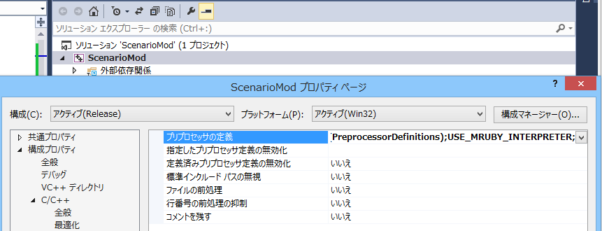
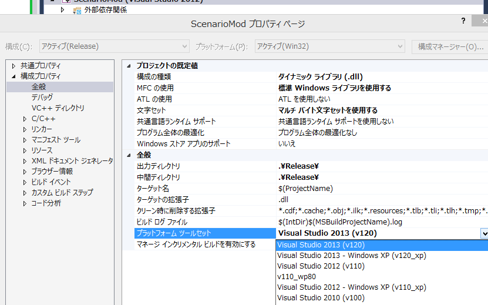
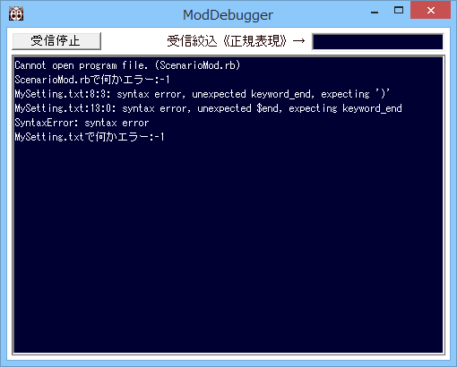

mrubyを使えるようにするための、ScenarioModの設定
必要環境
- ScenarioModで「mruby」を利用するためには、こちらのページからダウンロードできるmrubyのcp932修正版をビルドし、
出来上がった「libmruby.lib」「libmruby_core.lib」を、ScenarioModの「mruby/lib」フォルダ内へと上書きしてください。
- ScenarioModでは、デフォルトでは2013用にビルドしたものが含まれています。
ScenarioModの設定
- mrubyは、サイズが大きいため、自動ではScenarioModで使えるようになっていません。
以下のように設定を行ってください。
- ScenarioModのプロジェクトを右クリックして「プロパティ」より「C++のプリプロセッサ」として、
「USE_MRUBY_INTERPRETER」を付け加える

- 同様に、「全般」のプラットフォームセットで、自分自身が使っているVisual Studio のバージョンのものを選ぶ。
自分自身がVisual Studio 2015 を今起動している、そのまま「Visual Studio 2015」を選ぶ。
このように、自分自身が利用しているバージョンと合わせます。

- printやエラーの類は、全て「ModDebugger」上に出ます。
